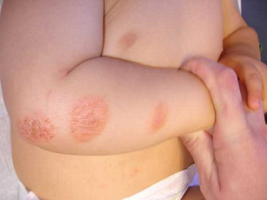
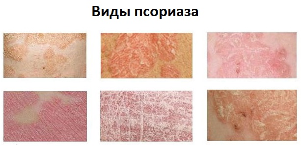

Псориаз — распространенное кожное заболевание, которое встречается у людей в возрасте от 15 до 35 лет, но может быть диагностировано и в первые три месяца жизни. Это хроническое состояние, которое может улучшаться или ухудшаться со временем.
СИМПТОМЫ
У людей с псориазом, как правило, наблюдаются ярко-розовые, зудящие, покрытые чешуйками пятна на коже различных участков тела. Чешуйчатые пятна на коже могут быть нескольких цветов, от розового до красного, часто с серебристым отливом. Пятна могут приподниматься над уровнем кожи. Участки, которые чаще всего поражаются псориазом:
• передняя или задняя часть коленей;
• передняя или задняя часть локтей;
• живот и грудная клетка;
• волосистая часть головы.
Псориаз и артрит. Примерно у 30% людей, страдающих псориазом, также могут наблюдаться симптомы артрита. Это состояние известно как псориатический артрит. |

ПРИЧИНА И СПУСКОВЫЕ МЕХАНИЗМЫ
Точная причина псориаза неизвестна. Он считается одним из видов аутоиммунного нарушения, при котором иммунная система воспринимает здоровые клетки кожи как чужеродные для организма. Возникающая в результате воспалительная реакция ведет к классическим симптомам псориаза.
Спусковые механизмы, которые, как считается, усугубляют псориаз:
• сухой воздух и/или сухая кожа;
• стресс;
• вирусные или бактериальные инфекции;
• препараты лития, бета-блокаторы, лекарства от малярии;
• солнечные ожоги;
• нехватка солнечного света;
• чрезмерный прием алкоголя.
СОВЕТ ДОКТОРОВ СИРС: ЕШЬТЕ РЫБУ! Жиры, содержащие омега-3 полиненасыщенные жирные кислоты, — противовоспалительная пища, поэтому они очень полезны для кожи. Ежедневное потребление омега-3 жиров, содержащих докозагексаеновую кислоту, может помочь поддерживать кожу увлажненной и предотвратить обострения. |
ДИАГНОСТИКА
У псориаза классические и уникальные внешние проявления, поэтому его часто можно диагностировать просто при осмотре. Иногда, если диагноз вызывает сомнения, ваш врач может сделать биопсию кожи, чтобы исключить другие болезни. Если ваш ребенок жалуется на боль в суставе, врач может назначить сделать рентгеновские снимки.
ЛЕЧЕНИЕ
Лечение псориаза зависит от фазы и тяжести заболевания. Умеренные проявления псориаза часто можно лечить так:
Если этих методов недостаточно для контроля симптомов, существуют новые препараты, которые помогают ослабить реакцию иммунной системы организма. Очень тяжелые случаи псориаза иногда лечат иммунодепрессантами. Обратитесь к своему врачу для получения более подробной информации об этих новых методах лечения.
КОГДА БЕСПОКОИТЬСЯ
Осложнения псориаза могут включать:
Псориаз может быть очень тяжело излечим, в зависимости от течения и тяжести заболевания. Главная цель предотвратить обострения и эффективно лечить их.
Здоровье ребенка от докторов Сирс / Сирс У. и др.